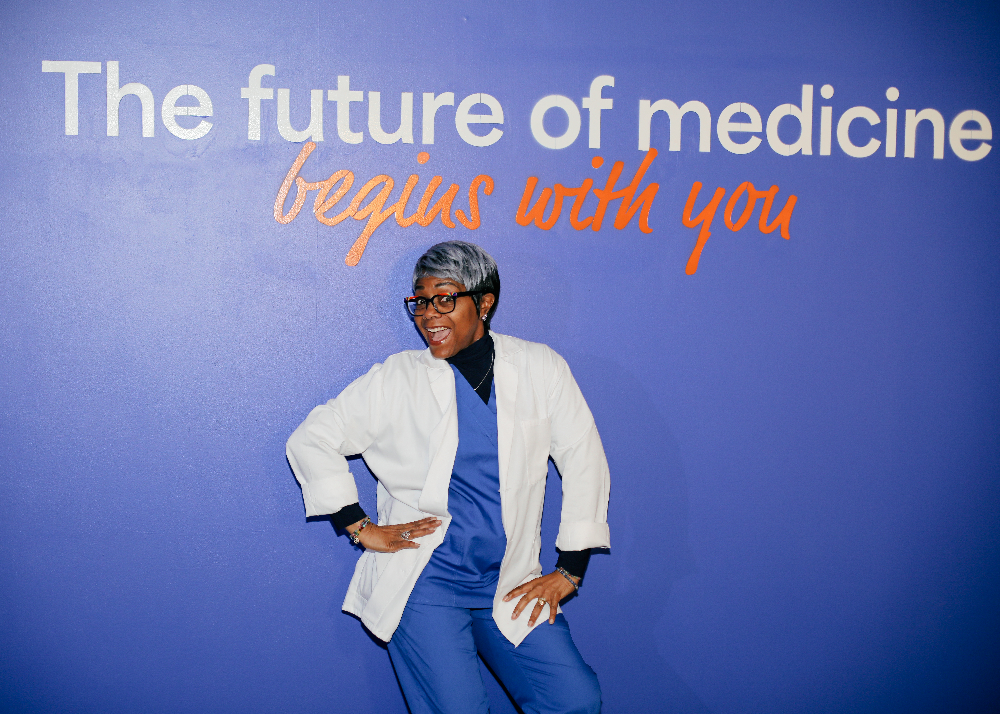
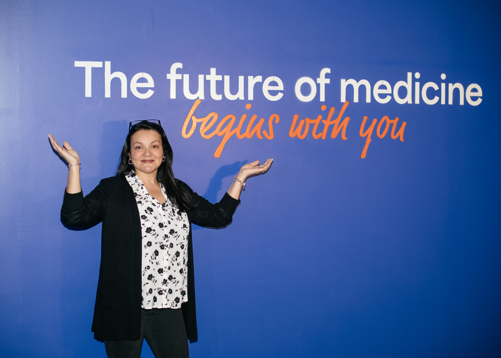
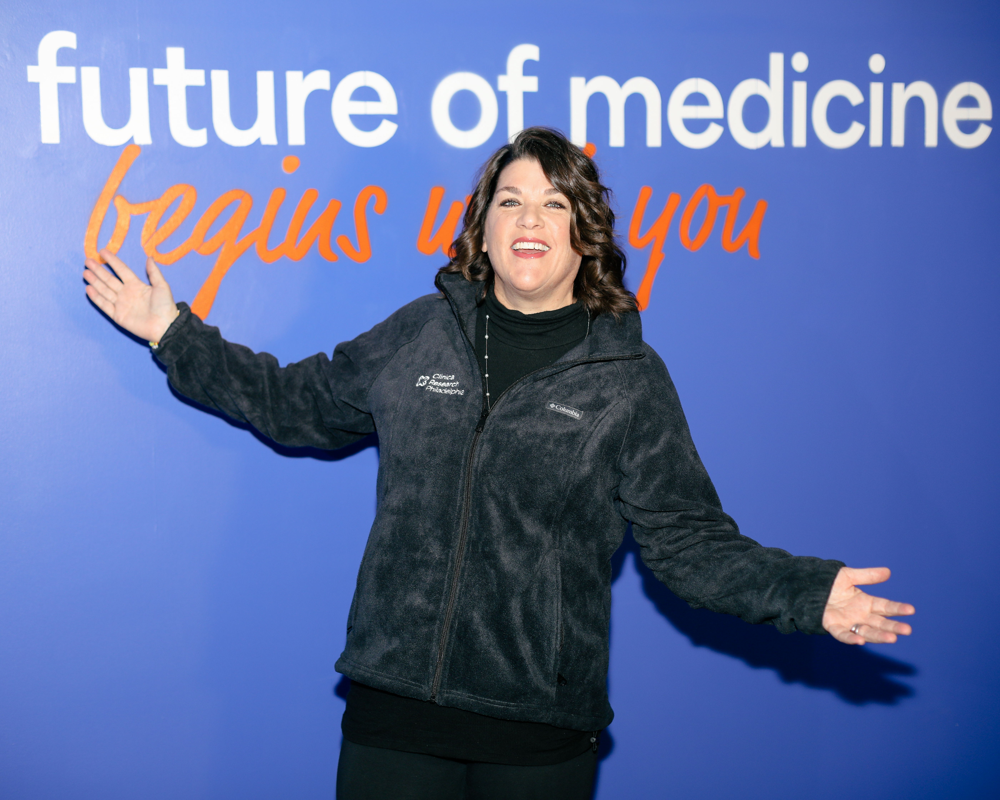
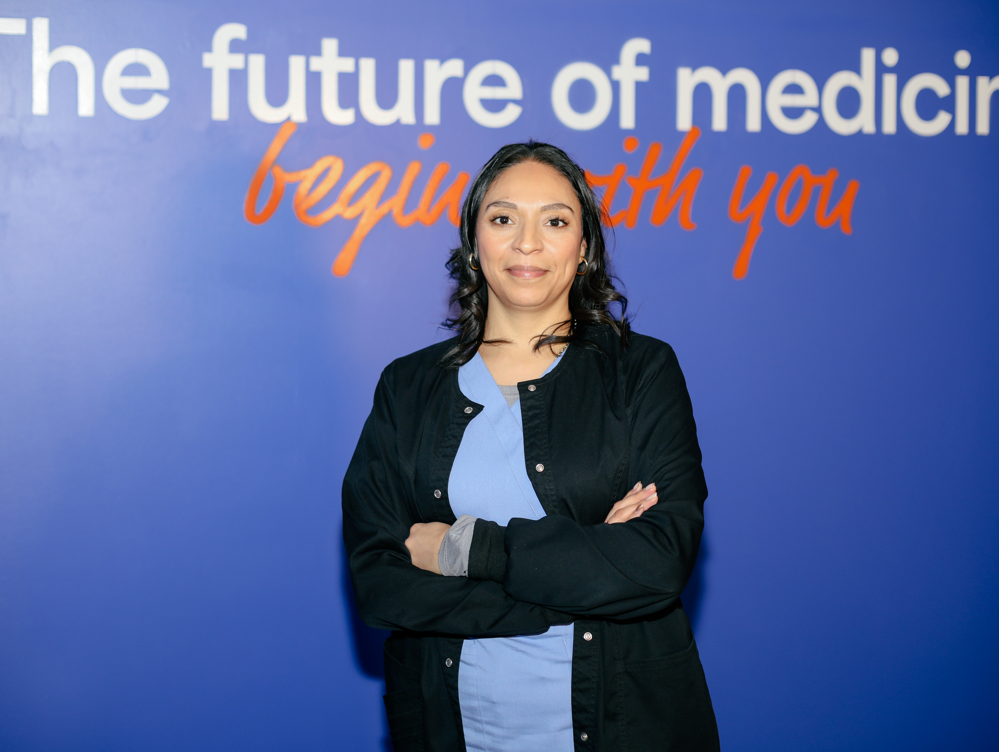
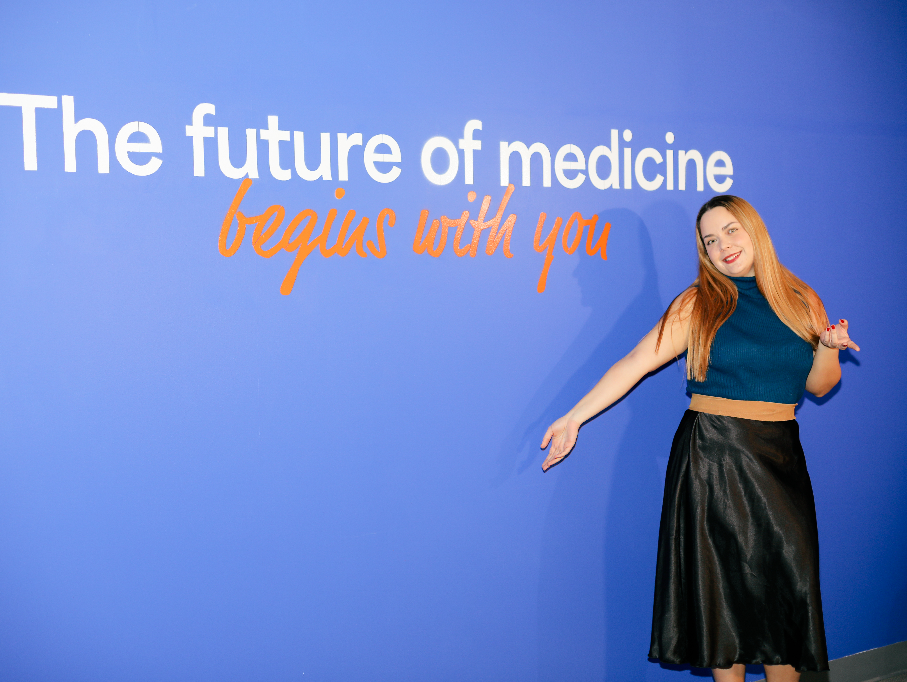
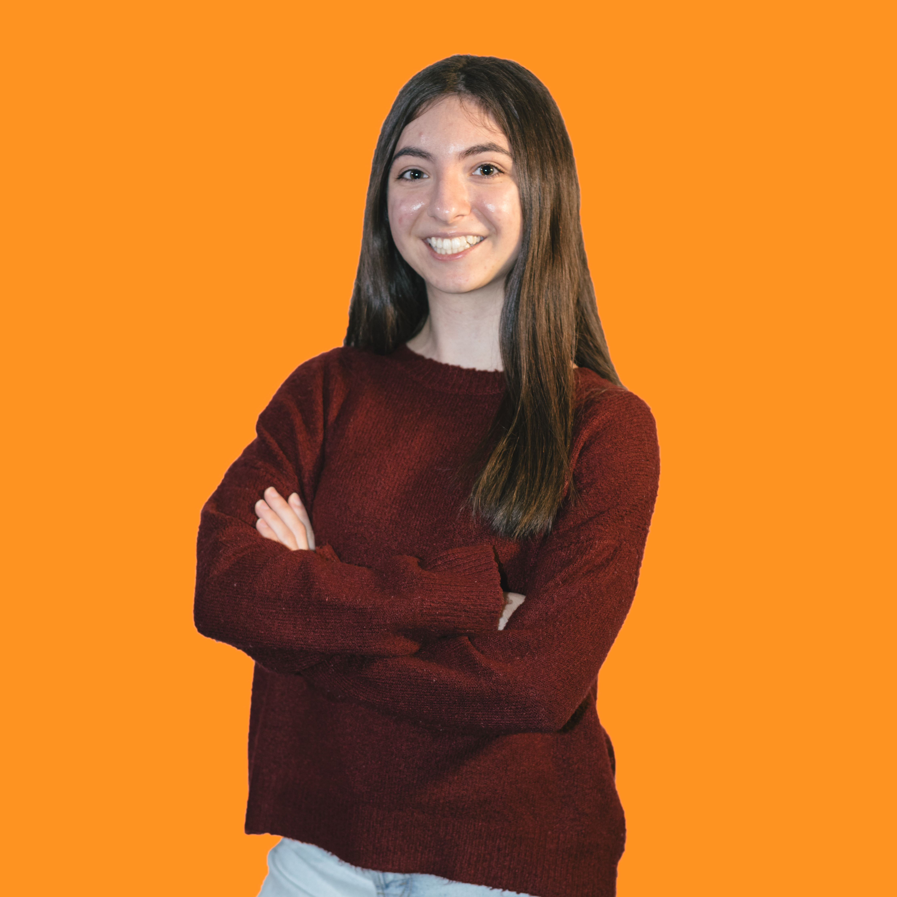

Approved photography · assets/photos/

staff-wall-portrait-1

staff-wall-open-arms

staff-wall-welcome

portrait-cutout-orange

staff-office-desk

staff-lab-specimen
Usage: Warm-lit, human, candid — per brand guide. Brand-wall portraits go in heroes and Split blocks; the orange cut-out style is the canonical staff-portrait treatment; office/lab candids support "how it works" sections. Also in the library: staff-wall-pose-1, staff-wall-portrait-2, staff-wall-portrait-3. Never stock photography.